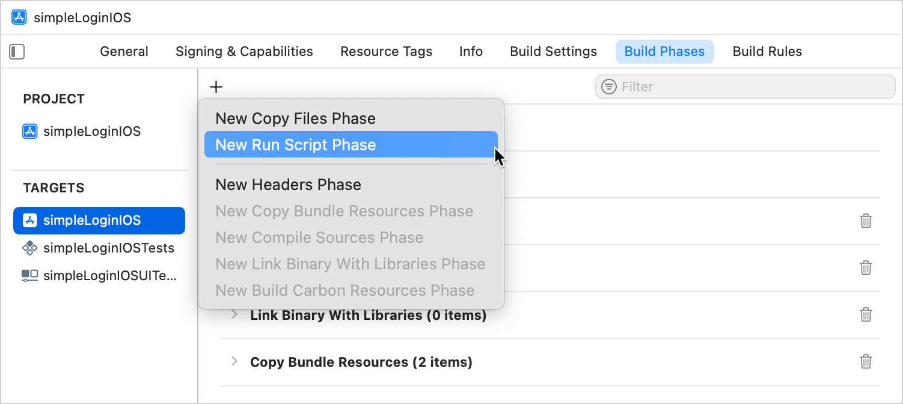
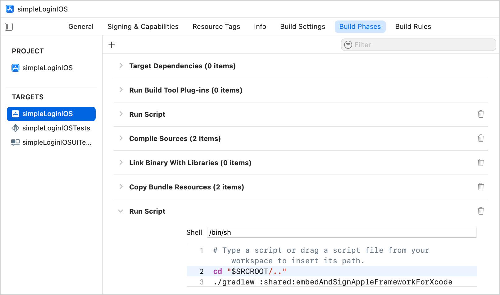
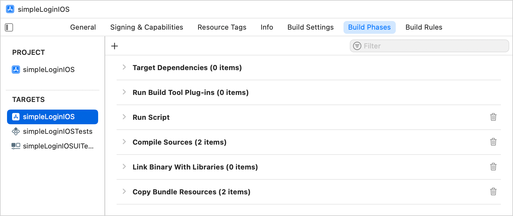
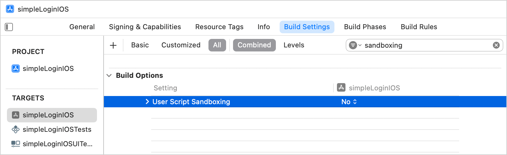

If you want to develop your Kotlin Multiplatform project and an iOS project simultaneously by sharing code between them, you can set up direct integration using a special script.
This script automates the process of connecting the Kotlin framework to iOS projects in Xcode:
The script uses the embedAndSignAppleFrameworkForXcode Gradle task designed specifically for the Xcode environment. During the setup, you add it to the run script phase of the iOS app build. After that, the Kotlin artifact is built and included in the derived data before running the iOS app build.
In general, the script:
Copies the compiled Kotlin framework into the correct directory within the iOS project structure.
Handles the code signing process of the embedded framework.
Ensures that code changes in the Kotlin framework are reflected in the iOS app in Xcode.
How to set up
If you're currently using the CocoaPods plugin to connect your Kotlin framework, migrate first. If your project doesn't have CocoaPods dependencies, skip this step.
Migrate from the CocoaPods plugin
To migrate from the CocoaPods plugin:
In Xcode, clean build directories using Product | Clean Build Folder or with the Cmd + Shift + K shortcut.
In the directory with the Podfile file, run the following command:
pod deintegrate
Remove the cocoapods {} block from your build.gradle(.kts) files.
Delete the .podspec and Podfile files.
Connect the framework to your project
To connect the Kotlin framework generated from the multiplatform project to your Xcode project:
The embedAndSignAppleFrameworkForXcode task only registers if the binaries.framework configuration option is declared. In your Kotlin Multiplatform project, check the iOS target declaration in the build.gradle.kts file.
In Xcode, open the iOS project settings by double-clicking the project name.
On the Build Phases tab of the project settings, click + and select New Run Script Phase.

Adjust the following script and copy the result to the run script phase:
cd "<Path to the root of the multiplatform project>"
./gradlew :<Shared module name>:embedAndSignAppleFrameworkForXcode
In the cd command, specify the path to the root of your Kotlin Multiplatform project, for example, $SRCROOT/...
In the ./gradlew command, specify the name of the shared module, for example, :shared or :composeApp.

Drag the Run Script phase before the Compile Sources phase.

On the Build Settings tab, disable the User Script Sandboxing option under Build Options:

Build the project in Xcode. If everything is set up correctly, the project will successfully build.